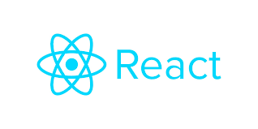

필자는 프로젝트를 진행할 때 백엔드, 프론트엔드를 Django 하나로 통일해서 사용하고 있었다. 템플릿과 뷰를 따로 관리할 수 있기에 나름 편리하게 사용하고 있었다 생각했는데 최근 백엔드와 프론트엔드의 프레임워크를 나누기 시작하여, 백엔드는 Django Restframework를 사용하며 프론트엔드는 React.js를 쓰는 방침으로 개발하기 시작했다. 우선 두 어플리케이션 간에 연결은 Restful API를 사용하며 React에 대해 알아가며 Node.js에 대해서도 이것저것 익히면서 공부해나가고 있었다. 이전 자바스크립트와 동일한 구간이 많아 어렵지 않게 할 수 있었으며 지금까지 배운 React의 기능들을 여기서 작성해보기로 하였다.
React

React는 페이스북 개발사가 개발한 UI 인터페이스 라이브러리로서 Node 기반으로 이루어져 있다. 각 기능들은 자기 상태를 캡슐화 시킨 컴포넌트로 이루어져 있으며, 단순히 한번만 사용하는 것이 아닌 여러곳에서 사용하게끔 설계되어있다. 그렇기에 하나의 페이지 안에서 컴포넌트들을 조합하여 사용하며, 다른 페이지 안에서도 컴포넌트들을 재활용하여 사용가능할 수 있다.
React는 Virtual DOM 이라는 가상 모델을 사용하여 각 컴포넌트 마다의 데이터가 변화에 따라 제각각의 인터페이스만 변화시켜주는 기능이다. 그렇기에 손쉽게 동적 UI가 가능하며, html과 같이 하나의 변화에 전체 페이지를 변화시키지 않아 성능적으로 최적화 되어있다. 다만 부분적으로 DOM을 사용하기에 많은 컴포넌트들이 존재할 수록 성능이 낮아질 수 있다는 것이 단점이다.
데이터의 흐름은 기본적으로 단방향으로만 구성되어 있는 Flux패턴의 단뱡향 데이터 바인딩 을 사용하고 있다. html에서 각 기능들에 데이터에 대해 자유로이 데이터의 이동이 가능하지만 React에서는 이런 데이터의 이동이 제한되어 있다. 부모 컴포넌트에서 자식 컴포넌트로 이동하는 props라는 것이 있지만, 반대로 자식에서 부모로 넘어갈 수가 없다. 대신 부모 컴포넌트에서 동적 데이터인 State 를 사용하여 State변경 함수를 props로 넘겨주면 자식에서 부모로의 데이터 이동이 가능하다. 이렇게 State와 props를 활용하면 데이터의 전달이 수월해질 수 있다.거기다 UI 라이브러리에 npm 의 라이브러리들과 호환이 가능하다. 다양한 UI 라이브러리를 사용할 수 있으며, 프론트엔드에 최적화되어있다라는 생각이 드는 라이브러리이다.